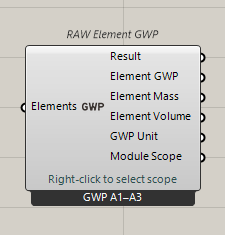
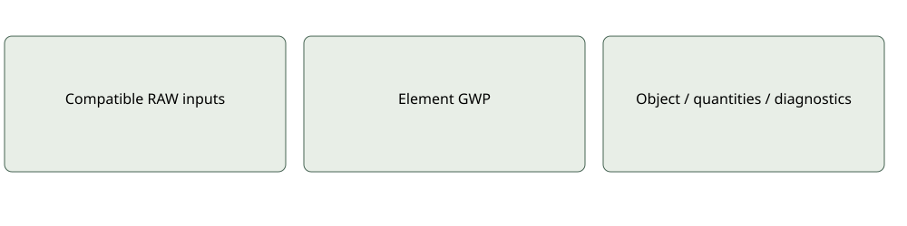

Impact
RAW Element GWP
Calculates GWP for the selected scope using quantities, material factors and eligible enrichment.
GWP identity is constant in all eight modes. Missing modules/context are not repaired by an icon.Current compact interface
Inputs: Elements: tree of EnvironmentalElement
Outputs: GWP: aligned nullable kg CO₂-eq; Total GWP; Result. Optional mass kg, volume m³, unit and scope.
Document-scoped assessment settings; source-factor arithmetic and recursive recipes share assessment services. Supplied factors are not characterized again. Incomplete or incompatible complete totals remain null.
Use and limitations
Optional and mode-specific ports may remain serialized when hidden. Inspect quantities, source provenance and coverage before interpreting results. A missing input is not an inferred zero.